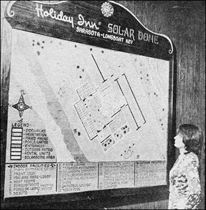
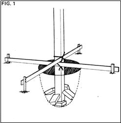
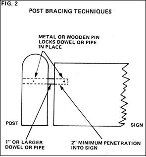
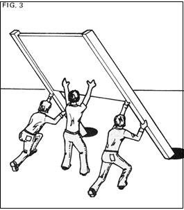

Dimension Wood Signs...How To Make 'Em And Sell 'Em Part Ii
By the Mother Earth News editors
January/February 1976
As I mentioned in the first half of this two part article, I believe that handsome, well designed, carefully crafted wooden signs are an asset to any landscape or city scene at least compared to the plastic and neon obscenities which now line most thoroughfares. I was pleased then in MOTHER NO. 36 to have the opportunity to share what I know about carving, routing, and otherwise constructing dimensional wood signs. The faster I can turn others on to my trade, the faster we'll have beautiful signs decorating our commercial environment.
Of course, I'm sure that the above view of my self employment enterprise is somewhat colored by the fact that I personally like the wooden sign business because it furnishes me with an outlet for my creative nature and it gives me an opportunity to work with beautiful woods.
You, however, may not be quite so aesthetically inclined. If not, so be it. I can still make a pretty good dollars and sense argument in favor of my wooden sign enterprise.
By working at just a reasonable pace, you see, you should be able to make $10,000 a year constructing dimensional wooden signs. You'll be your own boss in the process. And, if you maintain careful records, you'll be able to keep most of that $200 a week. Because you'll be able to deduct from your income tax the cost of all business supplies, at least part of the rent or mortgage you pay for your workshop, office, or studio, and the major expenses you incur from the operation of the automobile you now drive to work (if you do).
Owning your own sign business, in other words, can pay big dividends in personal creative satisfaction. It can also supply you with a respectable income, offer you far more independence than that enjoyed by those who work "for wages" and give you the kind of tax advantages that are only available to people in business for themselves. And if you prefer to work just when you feel like it for part time dollars and spend the rest of your hours out on the Ole Homestead with the chickens and the goats and the organic garden, that's OK too. You're the boss. All of which adds up to both dollars and sense to me.
KNOW YOUR MARKET
Almost every business, sooner or later, needs a sign. Show its owner or owners that that sign will really attract attention (money) and he, she, or they will be ready and willing to plunk down anywhere from $200 to $2,000 for the logo, nameplate, or whatever.
Now a moderately sized (approximately 50 square feet of copy area), illuminated plastic sign will today set a business man or woman back by $2,000. And still look just like plastic. Once you've mastered my trade, however, you can both construct and install a highly noticeable dimensional wooden sign of the same size for $1,300. It will be at least as eye catching as the plastic one arid a lot more in harmony with the environment.
You have, in short, a valuable service to offer to people who need it and you shouldn't be afraid to charge for your work accordingly. Pay yourself a decent wage for your time and talent and, chances are, you'll still be underbidding your plastic competition.
(Incidentally, I don't do plain painted signs because the field is highly competitive and the profit, therefore, too marginal. Yes, it is possible to go into the painted sign business with even less initial capital than that required by a dimensional wooden sign enterprise. And, yes, there's always a brisk demand for painted signs. But the profit just isn't there nor is the fun and challenge that's offered by the three dimensional work I do.)
PROMOTE THYSELF
Most of your first efforts in the dimensional sign trade will and should be directed at self promotion at establishing a reputation. Start by getting yourself known. Design an attractive business card and brochure and spread them around with a lavish hand. If you can afford it, you might even place an ad or two in the local newspaper or telephone directory.
Develop a built in radar for sensing when and where your best job prospects are likely to turn up. Once you've determined that an individual or business is or should be interested in your work, the timing of your sales effort is vital. Wait too long, and someone else will sell a sign (probably an ugly neon one) to "your" client. Move too early, and you run the risk of setting yourself up for months of torturous waiting. If you have to err one way or the other, of course, it's best by far to be premature, provided you don't pester the prospect to death with your efforts to make a sale and there's much to be said, too, for discretion.
It's a good idea, from the very first job you land, to photograph in color every sign you sell. Enlarge the best prints, encase them in clear plastic, and show them around. When you have enough good pictures, make them up into a portfolio by mounting them in the clear acetate pages of a display book (available from an office supply store). Such visual aids or small sample signs which show techniques of construction and finish will add a very professional dimension to your sales presentations.
BE THERE WHEN POTENTIAL CLIENTS NEED YOU
The most logical prospect for your service is the brand new business and it's just prior to the enterprise's Grand Opening that its proud owners are at the height of their optimism. Never again, in all probability, will you be able to approach them for so large a chunk of cash. Never again will they be so easy to sell.
This doesn't mean, of course, that you should attempt to oversell a small shop owner and load him down with a sign that's twice as big, elaborate, and expensive as he needs. Keep your suggested work in proportion to the size of the enterprise you're approaching. But do remember that your prospective client is generally the most receptive he'll ever be to your sales pitch just before he opens has new business' doors for the first time.
Bear in mind, too, that you'll probably be wise to quote a few small signs and finish and deliver them before attempting to tackle any of the biggies. This will give you the chance to become comfortable with your new business (little shop owners are often more tolerant of blunders in protocol and technique) and to develop and polish the abilities you'll need later when you handle the multi thousand dollar jobs.
Big or little, how do you know (preferably before your competition) that a new enterprise is about to open up? Keep your eyes open for businesses that are closing, because there may very well be a new one opening soon in the same location. You should also regularly check out the "fictitious name listings" where all new businesses are listed under their assumed names in the legal notices section of your newspaper. And, whenever you drive around town, make it a practice to watch for the new construction of stores and offices and/or the remodeling of old buildings that can mean a brand new enterprise is about to move in.
DEVELOP A REALISTIC FINANCIAL ATTITUDE
You may have to under price the first few jobs you land, in order to induce your initial customers to try your (to them) unproven abilities. Once you're sure of yourself, however, you should up your rates to a competitive level.
No, you should never get greedy. But you should remember that building a little profit into your pricing structure ensures that your business will survive and expand. Even if your present overhead is low, you should be charging enough to save for the construction of a nice shop with adequate help, tools, and perhaps a delivery vehicle. If you don't allow for such eventualities now when you quote a job, you'll be in effect phasing them out before they. even have a chance to become reality.
If you don't know how to go about it any other way, you can allow for future growth capital needs quite easily when you make a quote: Just figure out how much you need to do a given job (materials plus time at your hourly rate plus wear and tear on your tools, etc.) and add on an additional 30%. If the customer refuses and you're desperate for cash, you can always come down a little with most of your pride intact. But just try raising a quote once you've given a prospective client a figure that's too low!
LEARN TO CHARGE FOR YOUR WORK
Although I hesitate to tell you exactly how much to charge for the signs you construct, I can give you some minimum figures that I feel might be in order.
Fifteen dollars per foot per side is a fair price for routed signs. Twenty dollars per foot per side for low relief carved signs and twenty five dollars per foot per side for deep relief carved signs are not unreasonable. Double all footage charges for two sided signs. And always add to your base prices for installation and signposts (these two items can be itemized, if necessary, on the contract) whenever you're required to furnish such labor and materials.
By the way, a long string of acceptances is one sure indication that your pricing structure is too reasonable. If nobody ever refuses to give you a job because he or she thinks your quotes are too high, then it's a good bet that your prices are consistently too low. Raise them.
PUT YOUR CONTRACTS IN WRITING AND COLLECT A DEPOSIT
Never give a potential customer a firm quote until that customer has fully agreed upon exactly what the sign will look like, how it will be installed, and who will do the installing.
Then, once your quote for precisely the stated job has been accepted, set down an agreement to that effect in full detail in writing so that there'll be no misunderstandings later. This contract should be typed on your letterhead or on one of the standard contractor's forms sold by office supply stores.
Be absolutely certain that your contract specifies whether you or the customer will be responsible for installing the sign. (It's often possible to get the client to assume this obnoxious task, in the interest of economy.) If, however, you're elected, you'll have to reward yourself generously especially if the sign in question is large and tedious to muscle into place. (You may also want to hire a contractor who's well equipped with elaborate winches and cranes to do the job for you for a large fee which you'll simply pass on to your customer.)
At any rate, no matter who is supposed to do what, get it in writing. It's entirely unfair for a client to change his or her mind after delivery and ask you to repaint or otherwise revamp a sign unless he or she is willing to pay for such additional work. It's also unfair for you to deliver anything but what the customer ordered an the first place. A signed contract is a guarantee of protection for both of you.
Then too, for the sake of your financial security, you should always bear in mind that in the sign business, anyway you don't have a binding contract until you also have 5O% of the cost of the job in question safely grasped in your hand.
No, I'm not trying to say that your average client will try to beat you out of payment on a bill if you don't get half your money in advance. But a certain number of them will and others who have eyes bigger than their cash registers can support will order more (and more elaborate) signs than they can possibly pay for unless they're forced to lay out cold, hard cash at the time the deal is made.
I get 50% of a job's cost at the time we sign and the balance upon delivery and I've never had any trouble collecting either the deposit or the balance. I've also been paid for all last minute delays and changes because I've always specified in my contracts that I will be paid for such work. Being businesslike saves a lot of heartaches.
USE LAYOUTS TO CLARIFY YOUR CONTRACTS
Another way to cement an agreement between you and a customer is by making a layout a finished sketch, to scale, of the proposed sign. The drawing should show all colors, artwork, type, post arrangements, and anything else pertinent to the job in question.
Make the layout on a generously sized piece of art board, suitably protected with a flap of textured, colored paper. Have the customer initial the drawing as "accepted by" at the time you both sign your contract.
Remember, of course, that you'll probably spend several hours on your sketch and that you should be paid for this time. It only irks a client to be presented with a long string of itemized expenses, however, so don't. Just lump your layout charge along with everything else in your grand total and let it go at that. But don't forget to lump everything including the sample drawing in that total.
The only exception to this "hide the cost of the drawing" approach should take place when your customer requests a great number of layouts for a prospective assignment that you aren't at all sure you'll get. In such a case, it would be foolish to do all that work for nothing so, before you begin, have a clear understanding that the samples of artwork will cost a certain amount, whether or not you land the larger job.
RED TAPE
You should, of course, check out all local sign ordinances before you sign a contract to do any job. Some localities, for instance, will not allow you to take out a sign permit which is invariably required almost every place that anyone wants to erect a sign unless you're a licensed sign contractor. And such a license is usually only granted when the official examiners are satisfied that you have many years of experience in the business and that you're familiar with all applicable sign ordinances and building code data.
If you cannot (after discreetly checking out the local rules and regulations) qualify don't despair. You can probably sidestep most of the red tape merely by having your customer get his own permit for the erection of the sign (offer him a ten or twenty dollar reduction for handling this task for you).
And do thoroughly run through all sign ordinances before you sign any contract. You'll learn a lot and you won't be unknowingly suckered into dumping a job because your area's regs outlaw signs of a certain size or too near a property line, etc.
As for more general permits and licensing, you'll need a state sales tax number if. you plan to collect any money for your work (since almost all signs are taxable now). This number will allow you to purchase all your materials tax free, of course, so it's not all bad. And, if you intend to use a business name for your business, you'll have to go down to your local newspaper office in most states and sign an assumed name form. If you intend to operate under your own name, however, you can disregard this duty. But don't forget to comply with all federal tax rules for self employed individuals. And, if you hire help, make sure you withhold taxes properly and otherwise comply with applicable regulations.
HOW TO PHYSICALLY CONSTRUCT THE SIGNS YOU SELL
Just in case you've forgotten: The first half of this article which appeared in MOTHER NO. 36 was eight pages long and crammed with all I know about setting up equipment for a dimensional sign shop, choosing and buying wood, constructing supporting frameworks, and routing, carving, and painting signs. If you're really interested in the business and you missed No. 36, get it.
HOW TO SET UP AND DISPLAY THE SIGNS YOU MAKE
Choose supports that harmonize with each sign you construct. Generally, this means wood but concrete, rock, and other materials can also be used. And it never hurts to suggest to a customer that he or she might want to do a little special landscaping around your finished installation. Natural plants, flowers, or a rock garden look great at the base of a sign.
Any wooden posts or other wooden members of an installation that touch (or, in some areas, even come close to) the ground should be thoroughly protected with creosote, Woodlife, or some other such preservative. The soil under and immediately around the wood should be termite proofed also. (Remember that wood which touches the ground openly invites attack from both rot and termites.)
Wooden supports (or steel or aluminum, etc., for that matter) should be set in concrete. Center each one in the middle of its base with bricks or temporary scaffolding during the time the concrete is poured and allowed to set (See Fig. 1).
ANOTHER NOTE ON RED TAPE:
Be sure to check out all local ordinances that deal with minimum depth of posts below ground and the minimum allowed thickness of support posts. Before you erect any bases for your signs.
INSTALLATION PROCEDURES
You'll need at least two men to muscle a large sign into place more for the real giants. Typical tools that should be on hand before the job begins include a posthole digger, tape measure, seldgehammer, level, shovel, and if concrete is to be poured proper equipment for the working of sand, cement, and water. You can, if you've planned carefully, predrill all holes and prefasten all bolts, nuts, screws, etc., in your installation. It's usually much easier, however, to provide yourself with a long extension cord on site and just use an electric drill to punch the holes you need when you insert fasteners as you go along.
One inch pipes or dowels are generally sufficient to hold a sign together very nicely, as shown in some of the illustrations that accompany this two part article. Just be sure to lock each one in place with metal pins or nails so that none can work loose later when and if your sign sways, even ever so slightly, in the breeze.
As shown in Fig. 3, a sign that is already bolted to its support posts can be hoisted up Iwo Jima fashion by several (at least three) large men. It can, that is, if the holes for the supports have been carefully dug in the proper locations and checked for proper depth before the hoisting begins. It's dangerous to an expensive sign to try to move it around once it's been set up in this manner.
DON'T BE AFRAID TO HIRE HELP
If you have any doubts about your abilities in any area of this business, don't be afraid to bone up on your weak spots before forging ahead. And if, after some study, you're still not sure you can handle the job or jobs in question bring in There's always a good salesperson who'll work for you for a straight 10 20% commission (so you take no risk) on the work he or she sells. There's always a talented artist or designer who'll help you create attractive signs for your clients for a fair share of the selling price. There are always production and/or installation personnel who'll work for a reasonable hourly rate .
BUT DON'T OVERDO IT
Then again, don't get carried away with the idea of providing jobs for people just to provide jobs for people. It's a fine feeling to create meaningful employment for another human being but you're living a fantasy if you do so when you yourself need and can do the work that you've given to the other individual .
AND DO BE REALISTIC ABOUT WAGES
The setting of wage rates is another field rife with illusions and there are no hard and fast ground rules that will guide you through every circumstance you're likely to encounter. One employee who does good work fast for sic dollars an hour might earn his or her keep, while another who works very slowly for only three dollars per hour might not. You'll just have to try a few people at the usual hourly starting rate for the sign business in your area (around $3.00 here in Bradenton, Florida), and let the chips fall where they will. Replace the individuals who don't pay their way and give raises to the ones who demonstrate their value to your company.
SO GO GET 'EM!
And that's about it. Except for the actual physical work (I call it "fun") of constructing the signs themselves. And I covered that in the last issue of this magazine.
Happy routing, carving, nailing, sanding, and painting!
 Dimensional wood creations can serve as interior decorations as well as signs. I did this mosaic design for a local bank |
 Here's another wod sign possibility: maps and displays |
 |
|
 |
 |
|